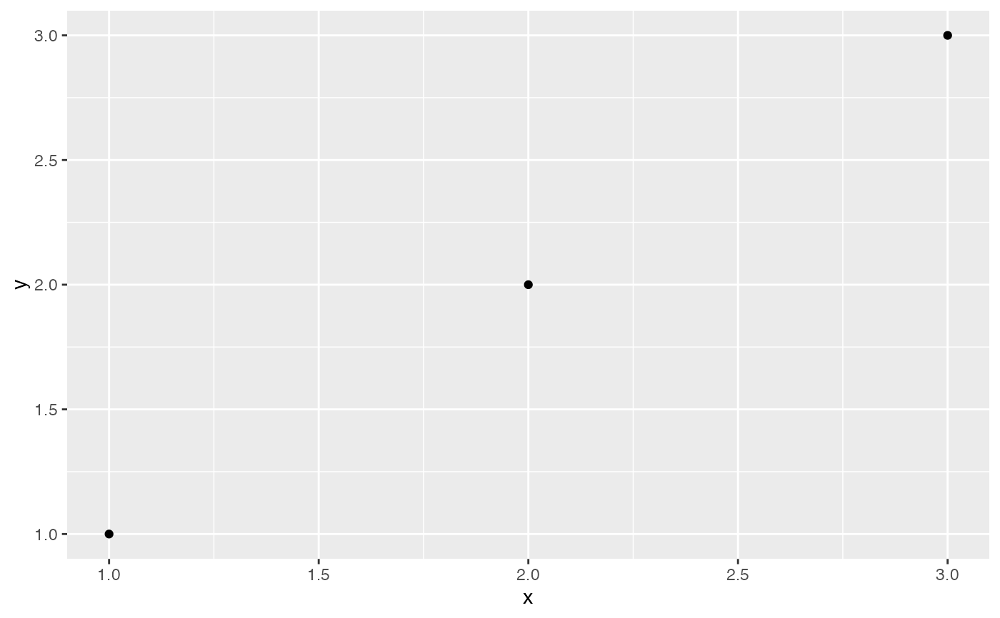

coord_webgl_3d() is a ggplot-addable helper that marks the WebGL payload as
cartesian3d and installs a structured 3D view contract. It does not replace
ggplot2's 2D coordinate system; the standard ggplot object remains valid, and
the 3D interpretation is applied by ggplot_webgl(). Panel ranges and
fixed-scale facet metadata still come from ggplot2's built plot object.
Arguments
- projection
Projection mode,
"perspective"or"orthographic".- camera
3D camera controller,
"orbit"or"trackball".- depth_test
Logical scalar; whether the browser renderer should enable depth testing for this scene.
- state
Optional camera state list passed to
ggwebgl_view().
Examples
ggplot2::ggplot(
data.frame(x = 1:3, y = 1:3, z = c(0, 1, 0)),
ggplot2::aes(x, y, z = z)
) +
geom_point_webgl() +
coord_webgl_3d()
